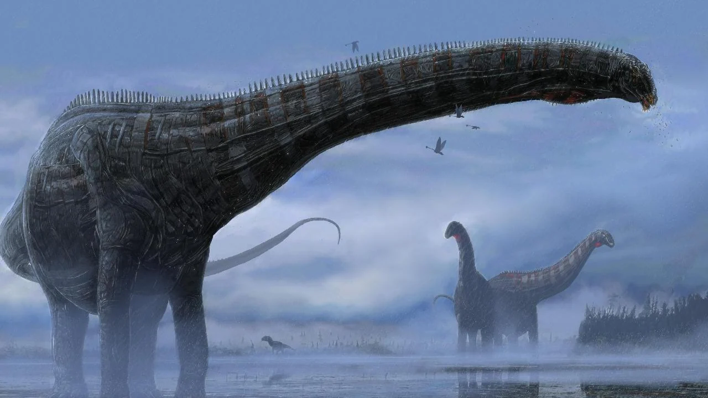

Dinozorlar Geç Triyas’ta, yaklaşık 230 milyon yıl önce ortaya çıktı ve Mezozoyik boyunca karasal ekosistemlerde çeşitlendi. Yaklaşık 66 milyon yıl önceki kitlesel yok oluş kuş olmayan dinozorları ortadan kaldırdı: kuşlar ise dinozor soyunun günümüze ulaşan temsilcileridir. [1]
Fosiller, dinozorların çok farklı boyutlarda, beslenme biçimlerinde ve yaşam alanlarında çeşitlendiğini gösterir. Bilinen tür sayısı yeni fosil ve sınıflandırma çalışmalarıyla değişir; fosilleşme kaydı eksik olduğu için geçmişte yaşamış toplam tür sayısını kesin olarak belirlemek mümkün değildir. [1]
Mesozoyik Çağ: Üç Dönem, Üç Dünya
Triyas Dönemi (252–201 milyon yıl önce): Dinozorların fosil kaydı Geç Triyas’ta belirir; erken dinozorların özellikleri ve ekosistemdeki payları zaman içinde değişmiştir. Pangea bu dönemde henüz büyük ölçüde birleşikti. Dönemin sonundaki yok oluş, ekosistemleri yeniden biçimlendirdi; dinozorlar bundan sonra çeşitlenmeye devam etti. [1]
Jura Dönemi (201–145 milyon yıl önce): Dinozor grupları çeşitlenirken sauropodlar ve theropodlar gibi farklı soylar yaygındı. Pterozorlar uçabilen, dinozor olmayan sürüngenlerdi. Kuşlar theropod dinozorlar içinde evrimleşti; Archaeopteryx, kuşların kökenini anlamaya yardımcı olan Geç Jura fosillerindendir. [1]
Kretase Dönemi (145–66 milyon yıl önce): Çiçekli bitkiler yaygınlaşırken dinozor toplulukları kıtalar boyunca değişti. Tyrannosaurus, Triceratops ve Velociraptor bu dönemde yaşadı. Dönemin sonunda Chicxulub çarpmasıyla ilişkilendirilen kitlesel yok oluş, kuş olmayan dinozorların sonunu getirdi. [1, 2]
Önemli Dinozor Türleri ve Özellikleri
Tyrannosaurus rex (T. rex): Geç Kretase’de Kuzey Amerika’da yaşayan büyük bir theropoddu. Fosillere dayalı boyut ve kütle tahminleri örneğe ve ölçüm yöntemine göre değişir; bu nedenle tek bir ağırlık değeri bütün bireyleri temsil etmez. Fosil izleri ve diş yapısı, avlanma ve leşten yararlanma davranışlarının ikisinin de mümkün olduğunu düşündürür; fosil kanıtları bu yorumların sınanmasını sağlar. [1]
Brachiosaurus: Geç Jura’da yaşamış büyük bir sauropod dinozordu. Ön bacaklarının arka bacaklardan uzun olması, gövde duruşuna belirgin bir biçim verir. Boyut ve kütle tahminleri korunmuş fosil örneklerine dayanır ve yeni bulgularla güncellenebilir. [1]
Velociraptor: Geç Kretase’de Orta Asya’da yaşamış küçük bir theropoddu. Fosillerinde tüylerle ilişkili kanıtlar bulunur; popüler filmlerdeki hayvanlardan belirgin biçimde daha küçüktü. Ayaklarındaki kıvrık pençeler anatomik olarak tanımlayıcı özelliklerindendir; fosil kayıtları tüylerin varlığını destekler. [1]
Triceratops: Geç Kretase’de Kuzey Amerika’da yaşamış, üç boynuzu ve büyük kemiksi yakasıyla tanınan bir otçuldu. Boyut tahminleri örneklere göre değişir. Yakanın işlevi ve türün sosyal davranışı hakkındaki yorumlar fosil kanıtlarıyla sınanır; bunlar kesinleşmiş tek bir açıklama olarak sunulmamalıdır. [1]
Spinosaurus: Orta Kretase’de Kuzey Afrika’da yaşamış büyük bir theropoddu. Fosilleri kıyısal ve sucul ortamlara uyum gösterdiğine, balıklarla beslendiğine ilişkin kanıtlar sunar. Ne kadar zamanını suda geçirdiği ve yüzme biçimi hakkında bilimsel tartışmalar sürmektedir; bu nedenle tek bir ekolojik tanım kesinleşmiş olgu gibi aktarılmamalıdır; fosil verileri bu tartışmanın temelini oluşturur. [1]
Pterosauria (Uçan Sürüngenler): Pterozorlar uçabilen arkozor sürüngenlerdi; dinozor değillerdi, ancak onlarla evrimsel akrabalık paylaşırlar. Triyas’tan Kretase sonuna kadar yaşadılar. Quetzalcoatlus gibi büyük pterozorların kanat açıklığına ilişkin tahminler fosillere ve rekonstrüksiyon yöntemlerine dayanır. [1]
Plesiosauria (Deniz Sürüngenleri): Plesiozorlar ve mosasorlar deniz sürüngenleriydi; dinozor değillerdi. Plesiosaurus uzun boyunlu plesiozorlara, Mosasaurus ise Geç Kretase’de yaşayan mosasorlara örnektir. Bunlar farklı gruplardır ve fosil kanıtlarına göre çeşitli deniz ekosistemlerinde yaşamışlardır. [1]
Kitlesel Yok Oluş: Chicxulub Çarpması
Yaklaşık 66 milyon yıl önce büyük bir asteroit bugünkü Meksika’nın Yucatán bölgesine çarptı ve Chicxulub kraterini oluşturdu. Kraterin çapı yaklaşık 180 kilometredir; çarpmanın küresel etkileri, jeolojik kayıtlar ve çarpma kökenli maddelerle desteklenir. Çarpma olayı, dinozorların yok oluşunda temel etken olarak görülür. [1, 2, 4]
Çarpmanın fırlattığı toz ve sülfat aerosolleri güneş ışığını azaltarak iklimi ve fotosenteze dayalı besin ağlarını bozmuş olabilir. Jeolojik kayıtlar, kuş olmayan dinozorlar dâhil çok sayıda grubun yok olduğunu ve küresel türlerin yaklaşık dörtte üçünün kaybedildiğini gösterir. Science dergisinde Alvarez ve diğerlerinin çalışması, etkilerin süresi ve bölgesel seyri tek bir basit zaman çizgisine indirgenemez. [1, 2, 4]
“Chicxulub çarpması olmadan memeliler asla hâkim canlı grubu hâline gelemezdi. O kıyamet günü aynı zamanda bizim doğduğumuz gündür.” — Neil deGrasse Tyson, Astrofizikçi
Yalnızca Kuşlar Hayatta Kaldı
Kuşlar, theropod dinozorlar içinde yer alır ve yok oluş sınırını aşan tek dinozor soyudur. Bu nedenle serçeler, güvercinler ve kartallar sözcüğün evrimsel anlamıyla yaşayan dinozorlardır; kuşlar dinozorların yalnızca “mirasçıları” değil, bu grubun günümüzde yaşayan üyeleridir. [1]
Dinozorlar Nasıl Keşfedildi?
“Dinosauria” terimi 1842’de Britanyalı anatomist Richard Owen tarafından ortaya atıldı. Paleontoloji, fosillerin karşılaştırılması ve jeolojik bağlamlarının incelenmesiyle dinozorların evrimini araştırır. Yeni saha bulguları ve yeniden değerlendirmeler, bilimsel sınıflandırmayı sürekli günceller. [1]
Fosil araştırmalarında görüntüleme, karşılaştırmalı anatomi ve jeokimyasal yöntemler kullanılır. Mezozoyik dinozorların DNA’sının yeniden oluşturulmasını sağlayacak, doğrulanmış bir genomik materyal bulunmamıştır; bu nedenle filmlerdeki gibi klonlama bugünkü bilimle mümkün değildir. Yok olmuş türleri geri getirme önerileri ise ayrı bilimsel ve etik tartışma konularıdır.
Sonuç: Mirasımız
NASA’nın DART görevi 2022’de Dimorphos adlı küçük asteroidin yörünge periyodunu çarpma yoluyla değiştirdi; bu, kontrollü kinetik çarpmanın gezegen savunması için uygulanabilirliğine ilişkin ilk gösterimdi. Bu deney, Chicxulub gibi bir çarpmanın önlenebileceğini tek başına kanıtlamaz: gözlem, erken uyarı ve başka teknikler de gezegen savunmasının parçalarıdır. [3]
Kaynaklar: [1] S. L. Brusatte ve diğerleri, “The extinction of the dinosaurs,” Biological Reviews, 90(2), 628–642 (2015), doi: 10.1111/brv.12128. [2] A. R. Chiarenza ve diğerleri, “Asteroid impact, not volcanism, caused the end-Cretaceous dinosaur extinction,” Proceedings of the National Academy of Sciences, 117(29), 17084–17093 (2020), doi: 10.1073/pnas.2006087117. [3] NASA, Double Asteroid Redirection Test (DART) mission; N. L. Daly ve diğerleri, “Successful kinetic impact into an asteroid for planetary defence,” Nature, 616, 443–447 (2023), doi: 10.1038/s41586-023-05810-5. [4] L. W. Alvarez ve diğerleri, “Extraterrestrial Cause for the Cretaceous-Tertiary Extinction,” Science, 208(4448), 1095–1108 (1980), doi: 10.1126/science.208.4448.1095.